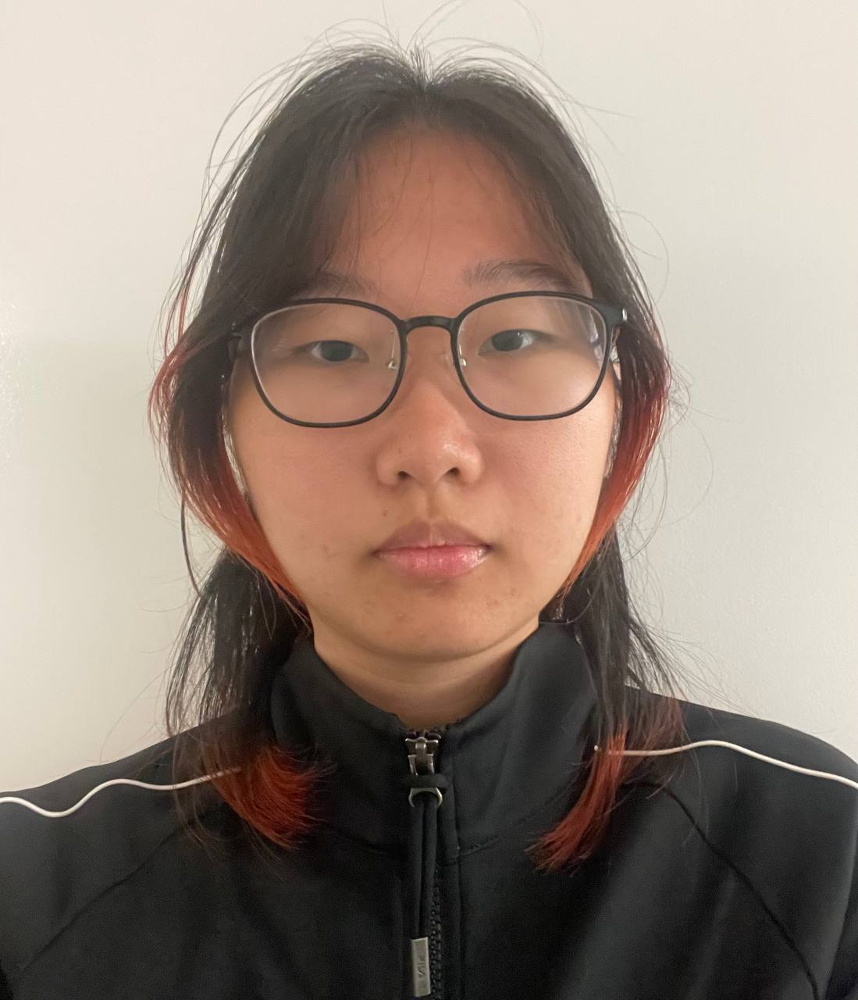
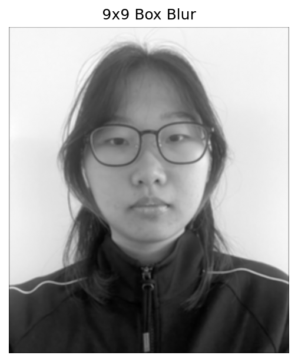
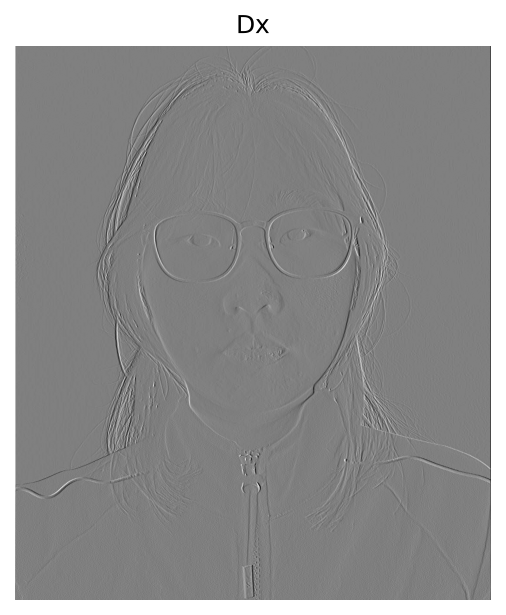
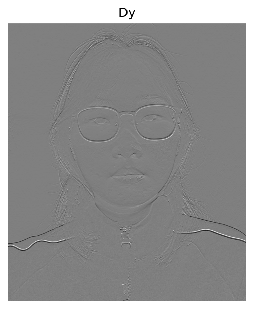

I implemented 2D convolution with NumPy only: flip the kernel, zero-pad the image ("same" or "full"), then slide over the padded image.
Four Loops
Visits every output pixel and every kernel entry explicitly, accumulating one product at a time.
Two Loops
Visits every output pixel, but replaces the inner two loops with one elementwise product and sum over the patch.
def pad_zero(image, kernel, mode="same"):
kh, kw = kernel.shape
ph, pw = (kh // 2, kw // 2) if mode == "same" else (kh - 1, kw - 1)
return np.pad(image, ((ph, ph), (pw, pw)), mode='constant', constant_values=0)
def conv2d_4loops(image, kernel, mode="same"):
kernel = kernel[::-1, ::-1]
kh, kw = kernel.shape
padded = pad_zero(image, kernel, mode)
H_out, W_out = padded.shape[0] - kh + 1, padded.shape[1] - kw + 1
out = np.zeros((H_out, W_out))
for i in range(H_out):
for j in range(W_out):
acc = 0.0
for u in range(kh):
for v in range(kw):
acc += padded[i + u, j + v] * kernel[u, v]
out[i, j] = acc
return out
def conv2d_2loops(image, kernel, mode="same"):
kernel = kernel[::-1, ::-1]
kh, kw = kernel.shape
padded = pad_zero(image, kernel, mode)
H_out, W_out = padded.shape[0] - kh + 1, padded.shape[1] - kw + 1
out = np.zeros((H_out, W_out))
for i in range(H_out):
for j in range(W_out):
out[i, j] = np.sum(padded[i:i + kh, j:j + kw] * kernel)
return out
Dx = np.array([[1, 0, -1]]); Dy = Dx.T; box = np.full((9, 9), 1/81)Filters applied to my selfie (read as grayscale): a 9×9 box filter (all entries 1/81), Dx = [1, 0, -1], and Dy = Dxᵀ.

Original

Box 9×9

Dx

Dy
| Method | Runtime · 9×9 box, 1280 × 1099 |
|---|---|
| 4 loops | 24.73 s |
| 2 loops | 3.50 s |
| scipy.signal.convolve2d | 0.12 s |
The 4-loop version is slowest because every multiply-add runs in interpreted Python. The 2-loop version pushes the kernel arithmetic into vectorized NumPy (about 7× faster), and SciPy is faster still (about 200× vs. 4 loops) because its loops are compiled. All three zero-fill the boundary (boundary='fill', fillvalue=0 in SciPy), so pixels near the border mix in the implicit black frame and get darkened after blurring. Max absolute difference vs. SciPy: 7.771561172376096e-16.